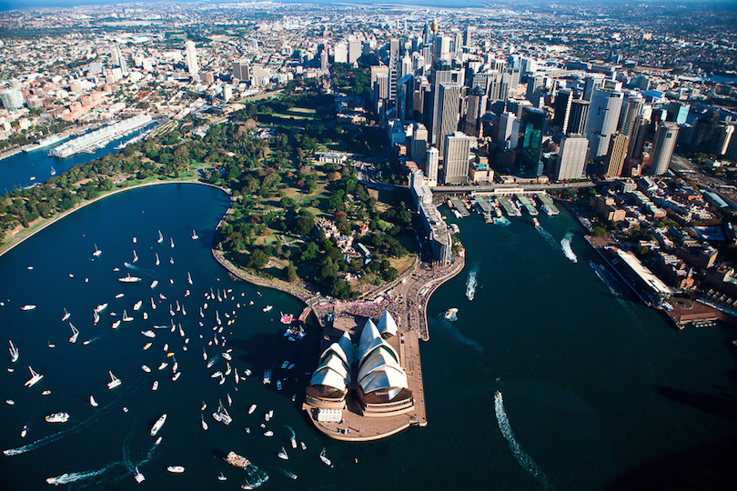
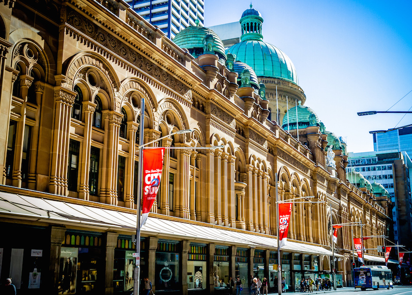
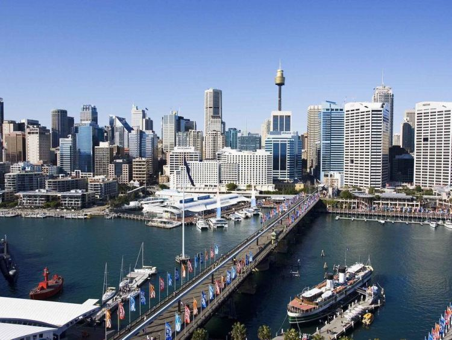

Az első, ami mindenkinek eszébe jut a városról, az az Operaház ikonikus épülete. A terv ihletője Sydney hatalmas jachtkikötője, az ott gyakran látható vitorlák voltak. Az operaházat II. Erzsébet brit királynő 1973. október 20-án avatta fel. Ebben az operában van a világ legnagyobb színpadi függönye és a hangversenyterem orgonája a világ legnagyobb mechanikus orgonája. Azonban nemcsak színházi előadások vannak: más rendezvények megtartására még öt terem áll rendelkezésre. Az épületben van még mozi és étterem is.
Egy gyönyörű épület, amely ma bevásárlóközpontként funkcionál. A neoromán stílus Viktória királynő uralkodása alatt népszerű volt. Üvegkupolája, az öntöttvas korlátai és ólomüveg ablakai csodás épületté varázsolja.
A több mint 100 éves állatkert csodás fekvésének is köszönhetően Sydney látnivalók kihagyhatatlan programja. A területről nagyszerű kilátás nyílik a kikötőre. Az állatkert 8 régióra van osztva és 28 hektáron 4000-nél is több állat látható.
A vízparti terület régen ipari dokk volt, mára azonban a város egyik kedvelt pihenőhelye lett Sok kávézó, bár, étterem van ezen a részen, Sydney látnivalók között kötelező helyszín. Emellett rengeteg nagyszabású eseménynek ad otthont. A két szemközti oldalt egy gyalogoshíd, a Pyrmont Bridge köti össze. A Kínai kert (Chinese Garden of Friendship) csendes pihenőhely, ahol kis vízesések és szép növények láthatók. Mindenképp szánjunk rá egy kis időt! Ezen a részen áll a Tengerészeti Múzeum (részletesen lásd lentebb) és az Aquarium is.
